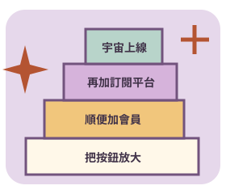

JUST ONE TINY CHANGE
小改一下
需求膨脹大挑戰
本來只要一顆按鈕，
最後長成一座城。

接案前，先把「順便」展開
六個專案，每案三項追加需求。安排首期／次期／不承接，協商資源、調整相依順序，再跑模擬驗收。至少妥善承接一項新增需求，同時完成原始交付；全部答應或全部拒絕都不是萬用解法。
工作格、預算點與混亂值皆為虛構遊戲單位，不是工時報價。分期、加預算都是模擬協議，不會下單或操作真實專案。不倒數、不上傳、不永久儲存。
原本那顆按鈕，終於交付
本公司的四條反膨脹守則
- 先保留原始交付，不能用漂亮的新增功能取代。
- 把相依工作也算進去，帳號、權限、資料與驗收不會憑空消失。
- 延長、加資源或分期都要有明確協議，不能默默把期限移走。
- 方案改了就重新模擬，舊版成功不能替新版背書。